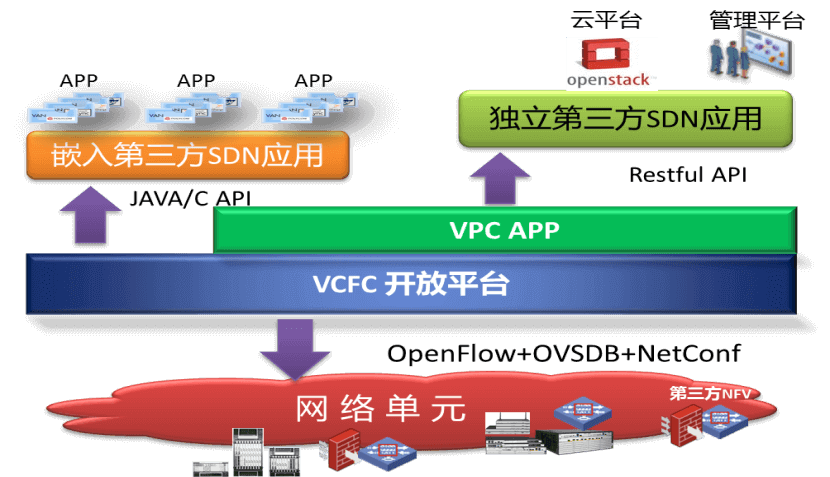

新华三助力山东移动数据中心网络转型
通信网络经历了1.0模拟通信、2.0数字通信、3.0IP化通信，正式进入通信4.0 时代。通信4.0 转型架构需具备的核心特征包括敏捷化、开放化、软件化、虚拟化。为实现快速响应市场发展、满足客户对通信网络深层次需求的目标，中国移动于2015 年初提出了发展下一代创新网络NovoNet 的理念，构建“资源可全局调度、能力可全面开放、容量可弹性伸缩、架构可灵活调整”的新一代运营商网络。
杭州华三通信作为新IT基础架构领导者携手山东移动紧跟集团步伐，有计划、有步骤地在数据中心等领域开展网络转型部署；通过在16年省业务平台资源池一期、二期整合项目共上千台服务器的落地实践，为运营商的SDN数据中心建设、基于NFV的IT/CT硬件设施软件化虚拟化等产品应用方面取得了较好的效果，已初步构建打造为国内最大的SDN私有云资源池之一。
主要技术内容
山东移动业务资源池中基于NFV&SDN的NovoDC（中移动新一代云数据中心）建设，主要包括如下方面：
1、制定SDN Controller北向接口标准，提供开放可编程的网络能力：山东移动定制化的OpenStack私有云平台和H3C VCFC Controller的标准北向接口实现互通并对内发布服务，为用户按需、自定义、即时开通虚拟机、虚拟存储、虚拟网络、虚拟安全等资源，加快业务开通速度；
2、基于NFV&SDN技术,提供灵活、精细化的安全服务：通过NFV&SDN技术实践，实现了基于业务链的灵活安全策略调度，提供精细化的安全服务的同时降低了专业硬件采购成本，提升业务接入部署的灵活性，加速传统网络的转型部署进度；
3、开源解耦的网络编排和网络应用等软件的开发，是业务的创新点和赢利点：SDN Controller、定制化的OpenStack云平台和应用软件的结合，实现网络随业务的按需变化。
效益情况
1、经济效益：山东移动自2016年部署NovoDC平台后，IT资源投资直线下降，相比传统方式投资减少50%以上；同时提升了现有IT资源的利用率，IT资源利用率由原来15%提升至60%以上。
2、运营效益：Ⅰ.通过NFV&SDN技术应用，实现IT资源的虚拟化能力，真正为山东移动各业务系统（B/M/O/S域）资源池进行横向打通，提供虚拟私有云服务。让用户按需自定义即时开通云资源（包括云计算、云存储、云网络），业务开通效率提升几十倍；Ⅱ.进行NFV技术实践，实现IT/CT专业设备的软硬件分离，降低了专业硬件采购成本，并实现跨系统间的资源共享，提高业务接入的灵活性，加速传统网络的转型部署进度。